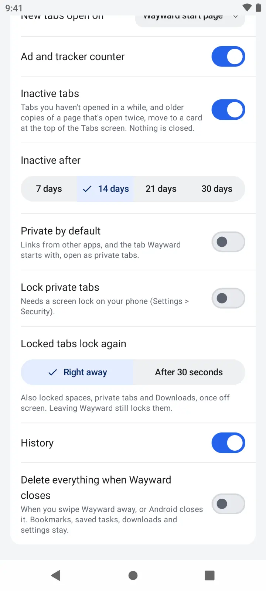

Clear data, Shred a site, or delete everything
How-to
Choose from five ways to remove browsing data. You can clear one site or everything. Bookmarks, downloads, saved tasks and your settings are never touched by any of them.
Clear browsing data
Open the ⋮ menu and tap Clear data at the bottom (it's also in Settings and in the Tabs screen's menu). Tick what to clear:
- Private tabs: closes them; their cookies and site data go with them.
- Tabs: closes your regular tabs and deletes their saved copies.
- History: the pages you visited.
- Cookies and site data: signs you out of most sites.
- Cached images and files: pages may load more slowly next time.
- Site permissions: what you allowed or blocked for each site.
Whatever you tick, text you typed in pages and hadn't sent yet, which Wayward keeps to put back if a page has to load again, is deleted too.
Then tap Clear. Wayward says Browsing data cleared. Bookmarks, start page shortcuts you added, saved tasks, downloads and settings are kept. A download under way keeps going.

If it would close locked tabs, or private tabs behind their lock, it asks for your fingerprint, face or PIN first. It clears every space at once. To clear just part of your history, like the last hour, use the broom in History instead (see history).
Shred one site
Tap the shield in the address bar, then "Shred" and the site's name. Wayward asks first, then closes the site's tabs and deletes its cookies, logins, site data, cache, permissions, history and start page shortcuts, and says the site was shredded. Its bookmarks are kept. In a space with its own sign-ins, the site's data goes from every space.
Turn on Shred automatically on the same sheet and the site's data is shredded by itself whenever none of its pages is open any more. A private tab's data already goes when the last private tab or Wayward closes.
Emergency delete
When you need everything gone right now: open the Tabs screen, tap ⋮, then Emergency delete (in red, near the end of the list). Wayward asks Delete everything?; tap Delete everything, or Keep to stop.
It closes every tab, private ones too, and deletes all browsing data, saved tabs, the assistant's chat and the shortcuts you added to the start page. Your spaces go too, apart from Main. Bookmarks, saved tasks, downloads and settings are kept, and a download under way keeps going. Wayward then says Everything deleted. This can't be undone.
You can also put Emergency delete on the Tabs screen's bar, in Settings > Customize > Tabs screen bar.
Delete everything and close Wayward
Open the ⋮ menu and tap Exit Wayward, the last row of its lower card (it's also last in the Tabs screen's ⋮ menu, under Emergency delete). A sheet asks first; tap Delete everything and exit, or Cancel to stay.
It deletes the same as Delete everything when Wayward closes below, whether that switch is on or off: every tab, private and locked ones too (it doesn't ask for your unlock), cookies, logins, site data, cache, permissions, history, saved tabs, the assistant's chat and the shortcuts you added to the start page. Your spaces stay, emptied. Bookmarks, saved tasks, downloads and settings stay. Then Wayward says Everything deleted. Wayward closed., and all its windows close, web apps' too, and leave recent apps. A download under way keeps going in its notification. Next time, Wayward opens on a fresh start page. This can't be undone.
To hide Exit Wayward from both menus, turn it off in Settings > Customize > Menu.
Delete everything whenever Wayward closes
Turn on Settings > Tabs and History > Delete everything when Wayward closes. Then each time you swipe Wayward away in recent apps, or Android closes it, Wayward deletes all tabs, cookies, logins, site data, cache, permissions, history, saved tabs and the shortcuts you added to the start page. Bookmarks, saved tasks, downloads and settings stay. A download under way keeps going in its notification.
This means you start signed out of every site each time.

More in Privacy & security
- Lock Wayward down
- See what was blocked, and let a broken site through
- Choose how much Wayward blocks
- Hide pop-ups and overlays on pages
- Secure connections, Secure DNS and the other privacy settings
- Camera, notifications and other site permissions
- Use private tabs
- Keep sign-ins apart with spaces
- Lock a tab, your private tabs, a space or Downloads